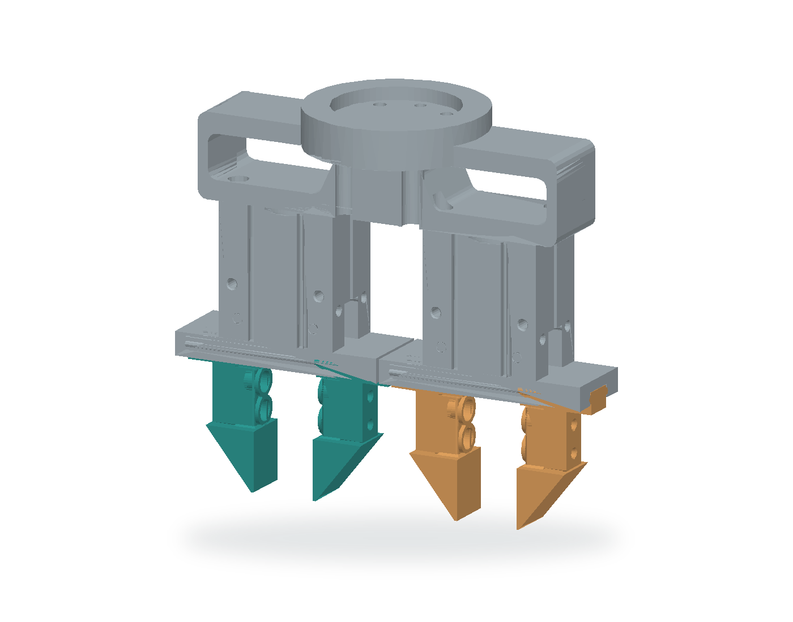
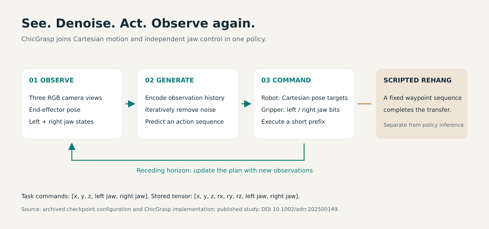
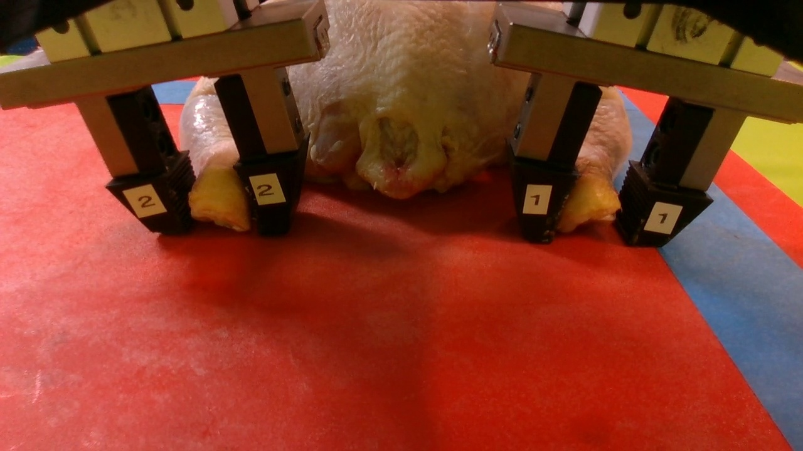
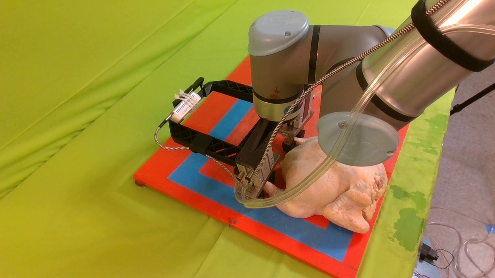
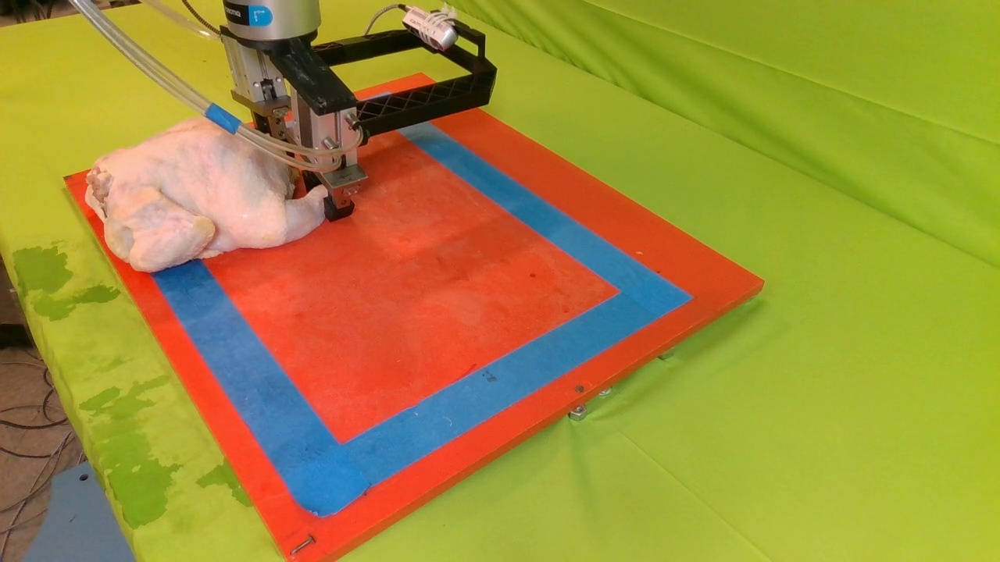
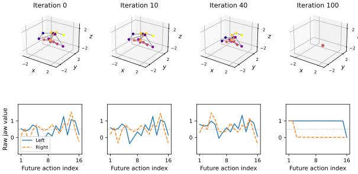
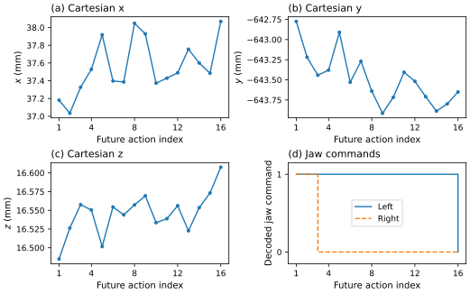
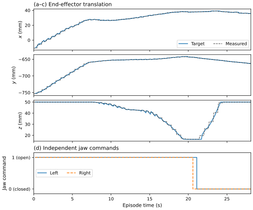
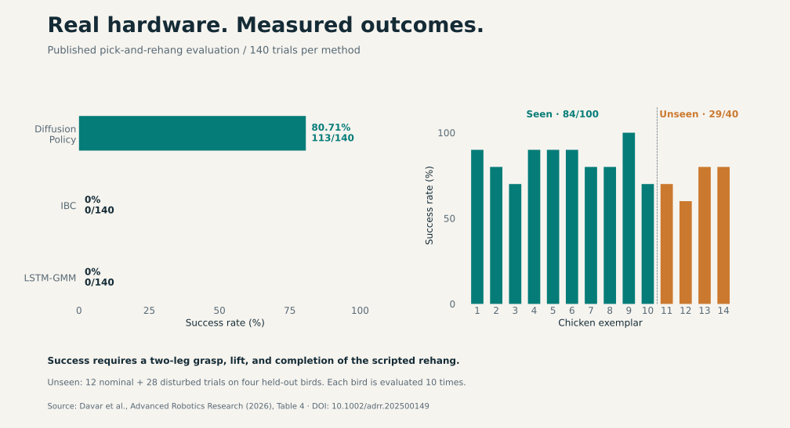

ChicGraspImitation-Learning-Based Customized Dual-Jaw Gripper Control for Manipulation of Delicate, Irregular Bio-Products
Advanced Robotics Research, 2026
ChicGrasp combines a customized pneumatic gripper with a diffusion policy to grasp poultry carcasses using a UR10e robot. The policy jointly predicts robot motion and two independent jaw commands. A scripted waypoint sequence completes the transfer to the shackle.
Gripper and policy

The gripper has two independently actuated jaw groups. This allows each group to close at a different time while the robot aligns the gripper with the legs.
The archived policy conditions on three RGB views, end-effector pose, and both jaw states. Its stored action is:
[x, y, z, rx, ry, rz, left_jaw, right_jaw]
Jaw values are rounded and clipped to binary commands: 0 = closed, 1 = open.

My contribution
I designed and fabricated the gripper, collected and integrated the demonstrations, trained the policies and baselines, and implemented the robot deployment and experimental evaluation. — Amirreza Davar
Diffusion-policy outputs
The numerical explorer below uses a separate replay with the checkpoint’s original 100-iteration setting. It shows the recorded intermediate model values, including the raw jaw predictions.



16 future steps
EMA checkpoint, seed 42. New offline predictions on recorded inputs; video/state alignment is approximate.

Final action sequence in physical units

Recorded robot and jaw commands
Logged commands from episode 14. Right closure occurs at 20.6 s and left closure at 21.1 s. These values do not measure contact or force.

Published evaluation
The study reports 100 teleoperated demonstrations and evaluates each method in 140 trials: ten trials on each of fourteen carcasses. Success requires grasping both legs, lifting, and completing the scripted rehang.
| Method | Seen | Unseen | Overall |
|---|---|---|---|
| Diffusion Policy | 84/100 (84.0%) | 29/40 (72.5%) | 113/140 (80.71%) |
| IBC | 0/100 | 0/40 | 0/140 |
| LSTM-GMM | 0/100 | 0/40 | 0/140 |

The reported successful cycle is approximately 38 seconds, including scripted rehang. These results describe a laboratory prototype handling individually presented carcasses.
Training curves
Project video
Ongoing work: Isaac Lab
A separate workbench for articulated anatomy, grasp retention, and shackle contact. The cinematic shows a held practice configuration; a repeatable released two-hock hang has not been verified. This work is separate from the published hardware evaluation.
Resources
Installation and real-robot usage · Reproduce the figures and videos · Sources and provenance · Citation
ChicGrasp builds on the Diffusion Policy implementation by Chi et al. The action-overlay animation follows the visual approach of the Diffusion Policy project page.